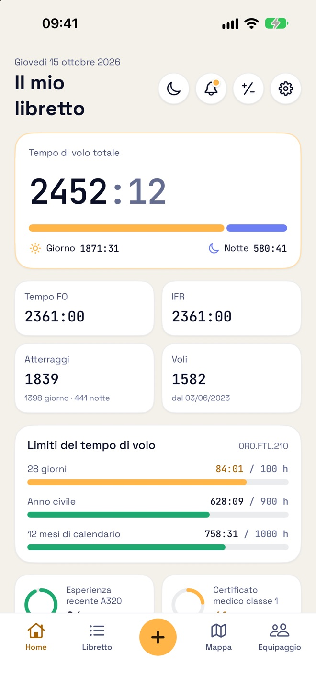
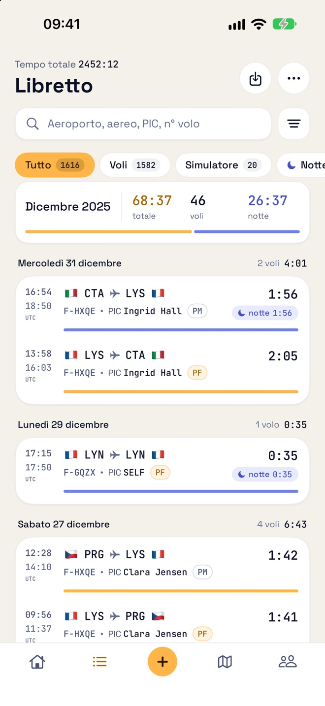
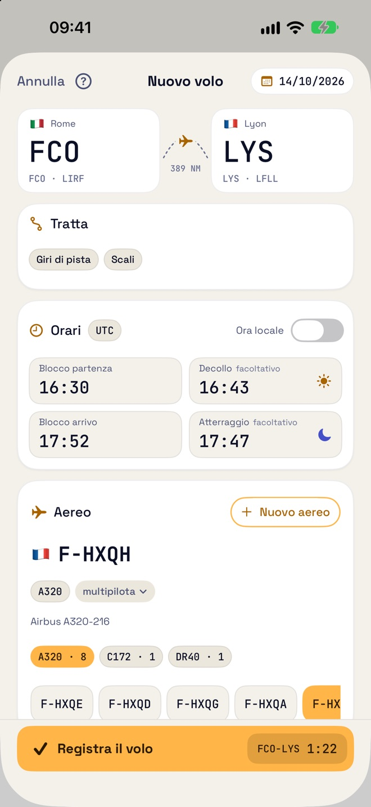
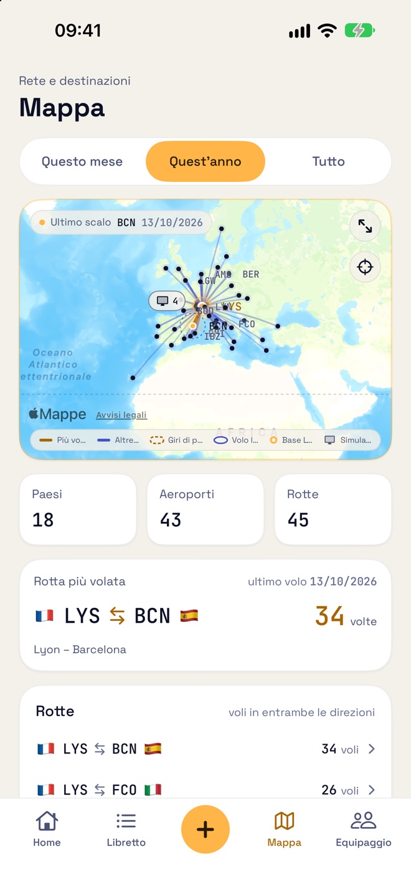
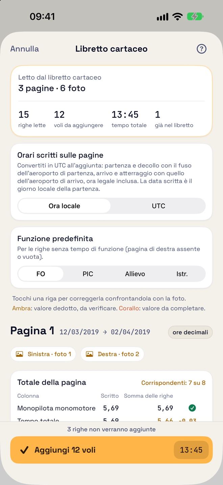

Gratis
0 € per i primi 50 voli
- Tutte le funzioni, importazioni comprese
- Nessun account da creare
- Nessuna pubblicità
Libretto di volo EASA · AMC1 FCL.050
Ogni volo finisce con la richiamata, il flare. Poi entra nel suo libretto.
Il libretto di volo EASA per piloti di linea, piloti privati e allievi, su iPhone e iPad. Tempo notturno, decolli e atterraggi vengono calcolati per Lei; esperienza recente, limiti del tempo di volo e scadenze restano sempre sotto controllo.
Gratis per i primi 50 voli · Senza account · Senza pubblicità
Tutto ciò che l’EASA Le chiede di registrare, senza le parti noiose.
Inserisca la rotta e gli orari di blocco: tempo notturno e decolli e atterraggi di giorno o di notte vengono calcolati dalla posizione del sole, secondo la definizione EASA o una Sua regola.
Esperienza recente FCL.060 per tipo di aereo, limiti del tempo di volo ORO.FTL.210 e promemoria prima della scadenza di certificato medico, abilitazioni e controlli.
Fotografi le pagine del suo libretto cartaceo: vengono lette sul dispositivo e Lei controlla ogni riga prima che venga aggiunta.
Porti con sé lo storico da un file CSV o Excel, o da un libretto PDF in formato EASA. L’app riconosce le colonne e verifica i totali.
Importi il roster dal calendario dell’iPhone o da un file .ics: i voli già effettuati vengono aggiunti, pronti da completare.
Un libretto EASA pronto da stampare in PDF, A4 orizzontale, e un’esportazione CSV di tutti i suoi voli.
Tutte le sue rotte e i suoi aeroporti su una mappa. Il database degli aeroporti è integrato nell’app.
Filtri il libretto e veda i totali dei soli voli mostrati.
Sommi e sottragga tempi in ore e minuti o in ore decimali, e legga il totale in entrambi i formati.
Tempo totale, esperienza recente e prossima scadenza nella schermata Home e nella schermata di blocco; il badge sull’icona conta ciò che richiede la sua attenzione.
Brevi guide animate mostrano ogni gesto nell’app, nella sua lingua e nel tema giorno o notte.
Un’unica app per iPhone e iPad, in italiano, inglese, francese, tedesco e spagnolo.





Inizi gratis. Senza pubblicità.
0 € per i primi 50 voli
29,99 € all’anno
Contano solo i voli: le sessioni simulatore e i posizionamenti no. Senza Pro, o una volta terminato l’abbonamento, il libretto resta consultabile, modificabile ed esportabile: solo l’aggiunta di voli richiede l’abbonamento.
Pagamento e rinnovo sono gestiti da Apple con il suo Account Apple. Il prezzo è indicato in euro; l’App Store mostra il prezzo del suo Paese.
Flare non ha account né server. Lo sviluppatore non raccoglie alcun dato personale.
Importazione, roster, abbonamento, iCloud: le risposte sono nella pagina di assistenza.
Vai all’assistenza